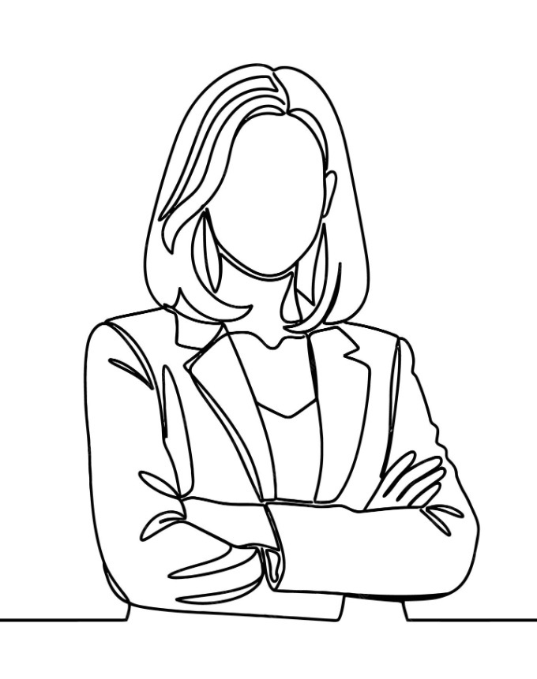

Profesjonalny coaching rozwojowy i wsparcie w kryzysie. Pomagam odzyskać równowagę i odwagę do podejmowania decyzji w zgodzie ze sobą.

Nazywam się Aleksandra Głowacka. Wspieram osoby stojące na rozdrożu kariery, mierzące się z chronicznym stresem lub poszukujące nowej ścieżki rozwoju.
Pojęcie rezyliencji to coś więcej niż radzenie sobie z trudnościami – to umiejętność adaptacji i wychodzenia ze zmian silniejszym. Na sesjach tworzę bezpieczną przestrzeń, w której odnajdziesz własne odpowiedzi.
Zobacz moje rekomendacje i profil na LinkedIn →Dopasowujemy proces do Twoich realnych potrzeb.
Praca nad redukcją przewlekłego napięcia, zapobieganiem wypaleniu zawodowemu i budowaniem psychicznej tarczy.
Wsparcie w przełomowych momentach zawodowych – awans, zmiana pracy, powrót na rynek lub własna ścieżka.
Rozpoznawanie blokujących schematów myślowych, budowanie pewności siebie i poczucia wewnętrznego spokoju.
15 minut bezpłatnej rozmowy online. Sprawdzamy wzajemne dopasowanie i określamy wyzwania.
Definiujemy pożądany kierunek, ustalamy harmonogram oraz ramy etyczne naszej współpracy.
Spotkania co 1–2 tygodnie. Wdrażasz nowe narzędzia i obserwujesz trwałe zmiany w życiu.
Zrób pierwszy krok bez żadnych zobowiązań. Napisz, zadzwoń lub skontaktuj się ze mną bezpośrednio.